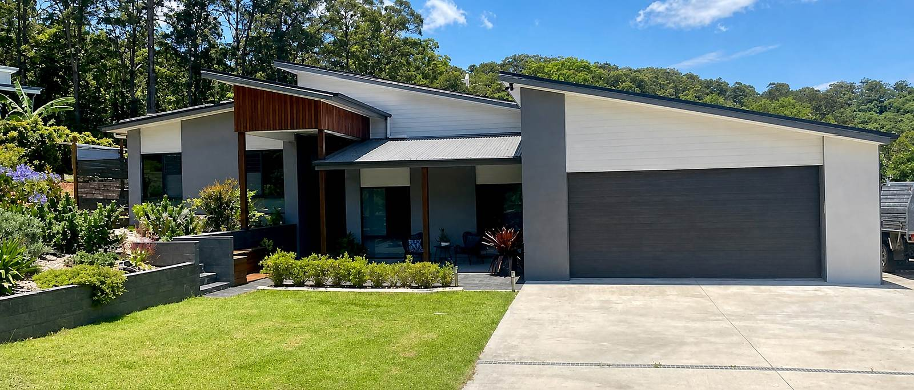
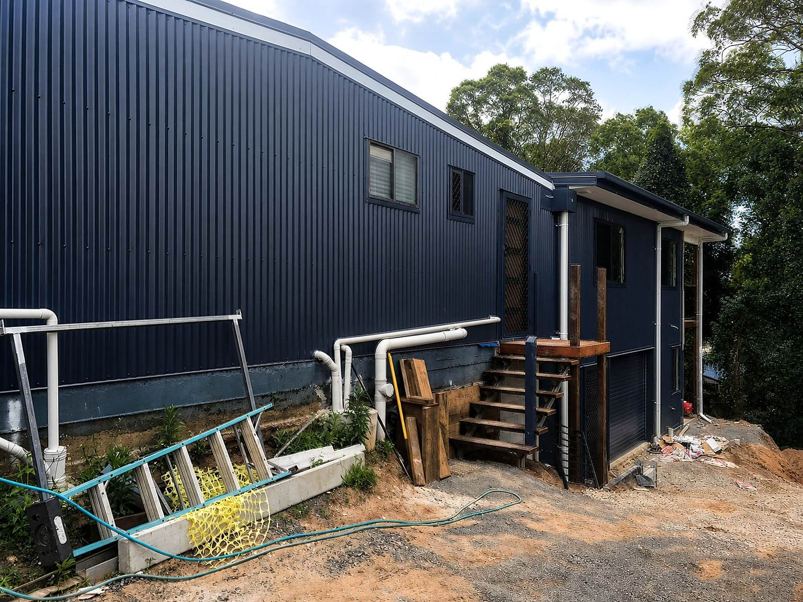
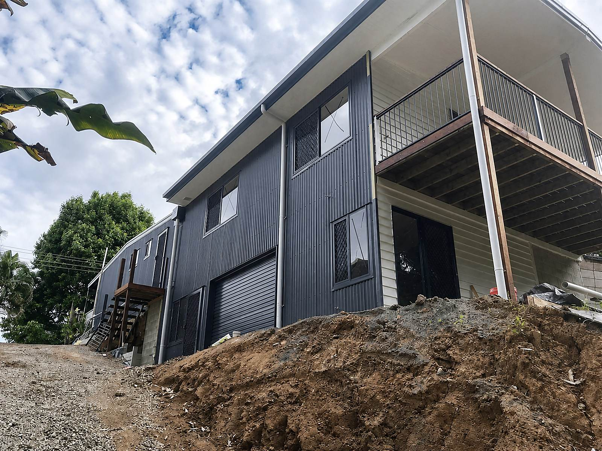
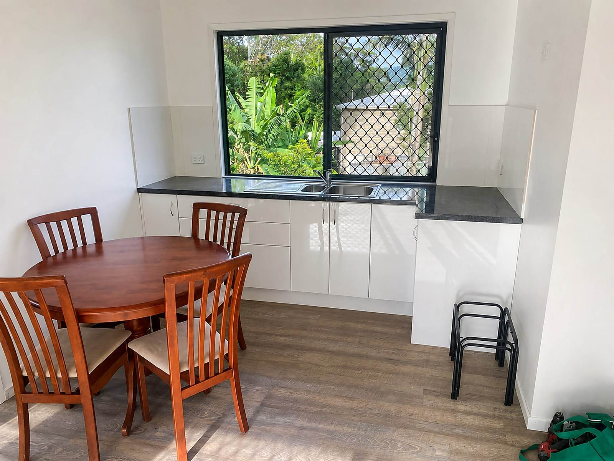
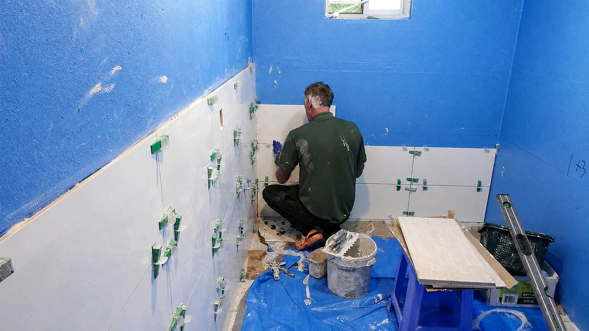
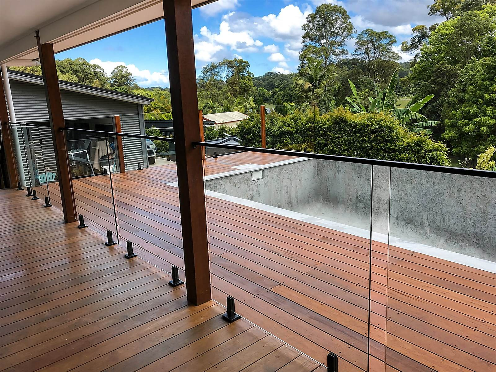
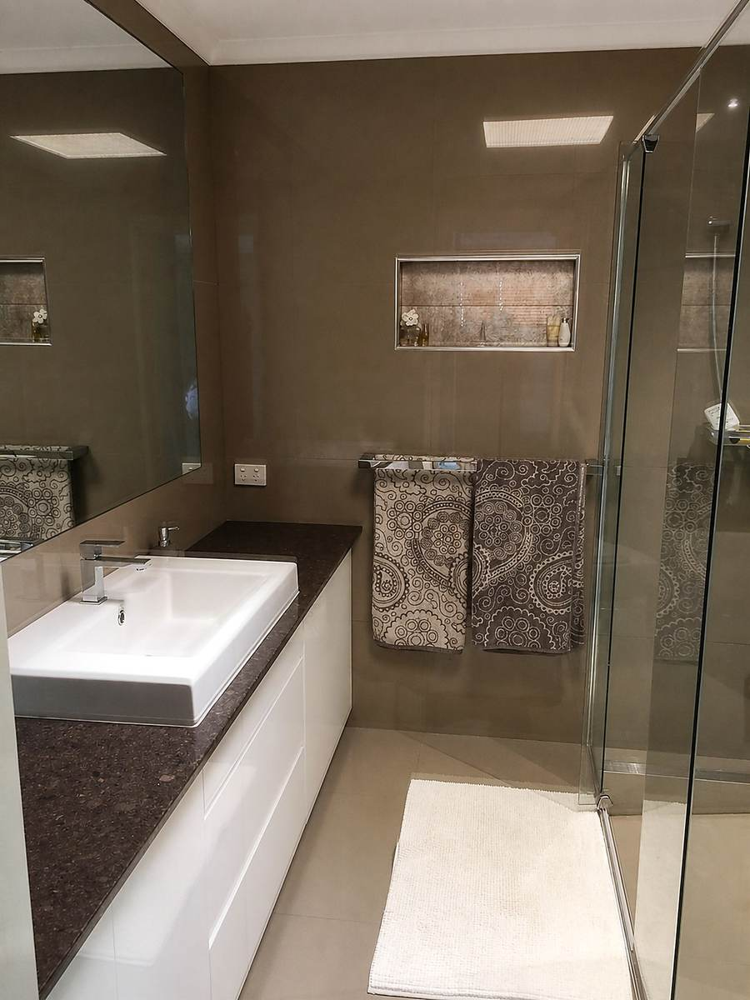
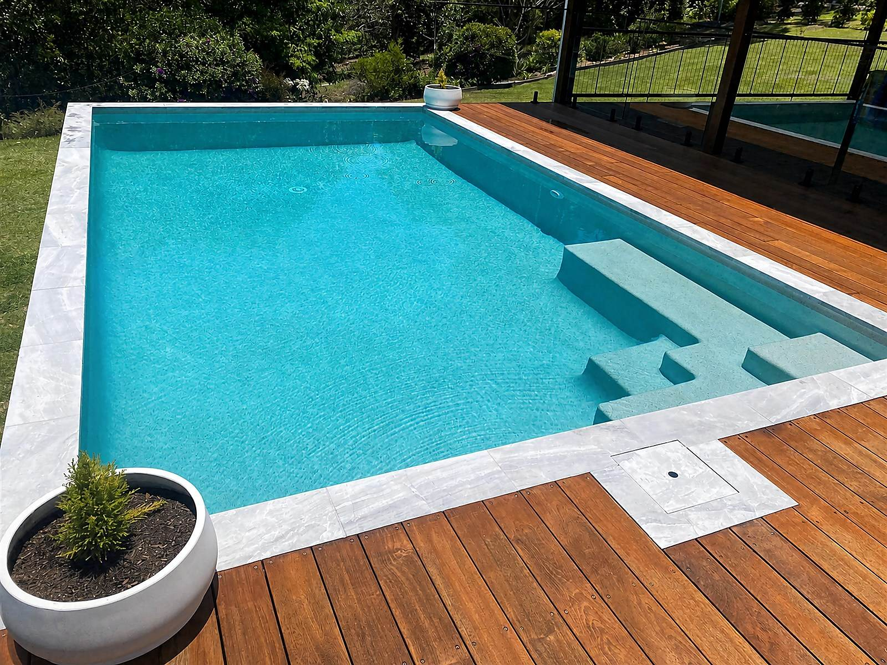

Home extensions & renovations Sunshine Coast
More room.Same placeyou love.
Extend, renovate or rework the home you already have—with practical building experience and a clear focus on how you want to live next.

01 Rosemount based
02 Serving the Sunshine Coast
03 QBCC licence 42674
Start with the change
What needs to work better?
You do not need to have every answer. Start with the change you want your home to make.

01Extensions · Alterations · Room additions
Add the room your home is missing.
Create more living space without giving up the place, street or community you already know.
Scope of work
Room by room. Roofline to backyard.
From whole-home changes to individual rooms, conversions and outdoor additions, the service range goes well beyond one type of project.
- Home renovations
- Home extensions
- Kitchen renovations
- Bathroom renovations
- Laundry renovations
- Bedroom renovations
- Garage conversions
- Roof & attic conversions
- Decks & patios
- Pergolas & outdoor structures
Selected extension work
See the change taking shape.


Registered builder details
Barry Keith Thompson
- QBCC
- 42674
- Class
- Builder — Low Rise
- Trades
- Carpentry · Joinery
A lived-in home is not a blank site
A builder who understands it is still your home.
“He also understands that it is your home, not just a building site.”Ron & Vivienne Cunningham · published client testimonial
Published client feedback highlights practical problem-solving, close attention to detail, clear communication and work homeowners have returned for.

Work in progress
More ways to make room
Build out. Open up. Rework what is already there.



A clearer first conversation
How the project takes shape.
- 01
Start with the problem
Tell us what no longer works, where the home is and what you would like to change.
- 02
Look at the site & scope
Bring the existing home, the intended outcome and the practical constraints into one conversation.
- 03
Plan the work properly
Set the scope, priorities and next decisions before construction starts.
- 04
Build the change
Turn the agreed scope into useful new space, then bring the home back together.
Start with a few details
What would make your home work better?
Share where you are, what you want to change and how far the idea has progressed.
Prefer to talk?0439 002 015